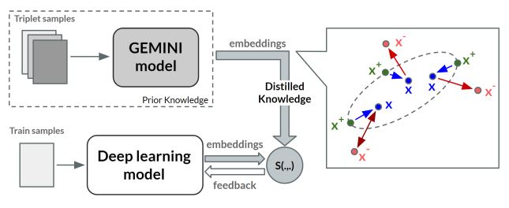

PhD in Computer Science and AI/ML Engineer with 6+ years of experience building and deploying machine learning systems, conversational AI, and scalable MLOps/LLMOps pipelines. I obtained my PhD from the
Center for Research and Advanced Studies (CINVESTAV),
where I researched the robustness and security of deep learning models with a focus on medical imaging, under the supervision of
Dr. Andres Mendez-Vazquez
and
Dr. Gilberto Ochoa-Ruiz
at the CV INSIDE Lab.
Currently, I work as an AI Specialist at Layer7, leading the design and deployment of enterprise LLM and multi-agent architectures for conversational AI, speech pipelines, and scalable MLOps workflows. I also serve as Lead AI/ML Instructor at AnyoneAI and teach machine learning, deep learning, and data science at graduate and undergraduate levels at ITESO, ITESM, and UMG.
I actively contribute to the research community as MLflow Ambassador at Databricks, Mentorship Chair at the LatinX in Computer Vision Workshop at CVPR, and as a mentor in the Google ExploreCSR Program LATAM.
I'm interested in computer vision, deep learning, generative AI, and robust machine learning. My research focuses on building models that can better understand and generalize across real-world scenarios, particularly in medical imaging. I work on improving model robustness against adversarial and natural corruptions, and developing federated learning techniques for privacy-aware and scalable AI.
A novel technique that boosts adversarial robustness by injecting perturbations from robust models into new tasks. Unlike traditional attacks, DDA enriches training with diverse, transferable adversarial signals, improving defenses across multiple datasets.
A benchmark for evaluating the robustness of monocular depth estimation models in endoscopic scenarios, featuring real-world image corruptions. Alongside it, we propose a new metric, mDERS, and release SCARED-C, a dataset tailored to assess performance under challenging endoscopic conditions.
A robust Federated Learning framework that leverages pre-trained models to improve kidney stone diagnosis while preserving data privacy. Our two-stage method—Learning Parameter Optimization and Federated Robustness Validation—boosts both accuracy and resilience to image corruptions across decentralized datasets.
A novel feature engineering method that combines meta-learning and causal analysis to automate the search for high-impact feature transformations. By encoding feature distributions and selecting causally relevant inputs, MACFE significantly improves prediction performance.
We present FedAgain, a federated learning algorithm for medical imaging anomaly detection across decentralized networks with heterogeneous data. The system uses a dual-signal trust mechanism based on reconstruction error and model divergence to downweight suspicious client contributions while maintaining privacy, achieving precision gains of up to +14.49% and F1 score improvements of up to +10.20% over traditional FedAvg.
A comparative evaluation between Vision Transformers and CNNs for kidney stone classification from endoscopic images. The ViT-base model pretrained on ImageNet-21k significantly outperformed ResNet50, achieving 95.2% accuracy on complex endoscopic patches compared to ResNet50's 64.5%, demonstrating that ViT architectures are a superior alternative for this medical imaging task.
Adversarial Robustness on Artificial Intelligence
Ivan Reyes-Amezcua,
Gilberto Ochoa-Ruiz,
Andres Mendez-Vazquez Book Chapter - What AI Can Do: Strengths and Limitations of Artificial Intelligence, 2024
This chapter explores the critical need for evaluating the robustness of deep learning models, especially in safety-sensitive applications. Focusing on adversarial attacks, we highlight the vulnerabilities of neural networks to small, targeted input changes and emphasize the importance of developing reliable techniques to ensure trustworthy AI systems.

Guided Deep Metric Learning
Jorge Gonzalez-Zapata,
Ivan Reyes-Amezcua,
Daniel Flores-Araiza,
Mauricio Mendez-Ruiz,
Gilberto Ochoa-Ruiz,
Andres Mendez-Vazquez CVPR - LatinX in AI Workshop, 2022 (Best Paper Award)
A novel approach designed to improve generalization and manifold representation under distributional shifts. By combining a multi-branch master model with a student model in an offline distillation setup, our method achieves up to 40% performance gains in visual similarity tasks through more compact and robust clustering.
Projects
Awesome MLOps End-to-End (2025)
End-to-end MLOps system for predicting trip durations in Guadalajara's MiBici bike-sharing system using MLflow, DVC, FastAPI, Docker, and automated retraining.
MACFE Framework (2022)
Meta-learning + causality automated feature engineering framework published at MICAI 2022 with reproducible open-source Python implementation.
PyCUDAcov (2020)
Highly optimized covariance matrix computation library using CUDA parallel programming, released as a PyPI package.
Machine Learning Projects Repository
Actively maintained repository featuring ML, DL, and Data Science projects aligned with state-of-the-art architectures and evaluation practices.